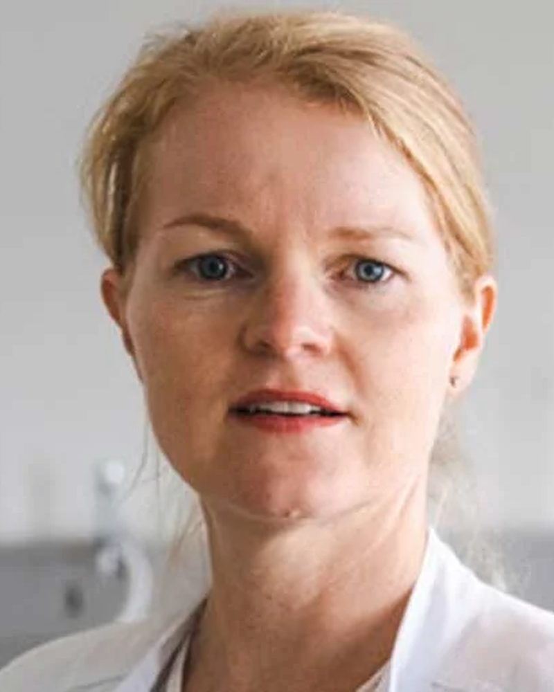
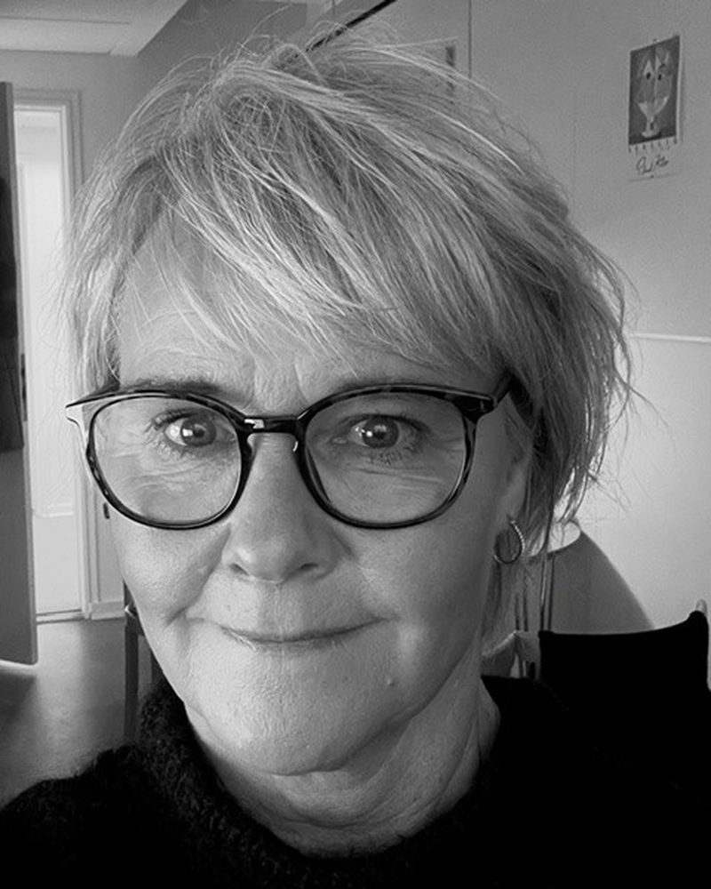
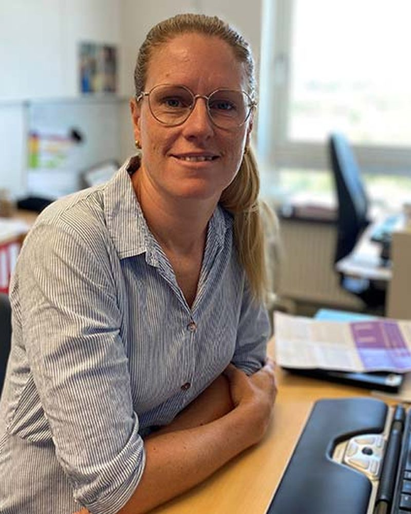

Members
The people behind QoLRC.
-

Lene Kongsgaard Nielsen
MD, PhD, Head of QoLRC
Specialist in hematology and head of the Quality of Life Research Center. Her research focuses on health-related quality of life and patient-reported outcomes in multiple myeloma and other hematologic cancers, including the methodology of measuring and analyzing quality of life in clinical studies. To do: Lene to check and expand this bio.
-

Henrik Frederiksen
MD, PhD, Clinical Professor in Hematology
Head of Research at the Hematology Research Unit, Odense University Hospital and University of Southern Denmark. His research covers non-malignant hematologic diseases and the complications and reduced quality of life that aging, frailty and other chronic conditions bring to patients with hematologic cancer. Former chair of the Danish Society of Hematology.
-

Niels Abildgaard
Clinical Professor in Hematology
Clinical professor at the Department of Hematology, Odense University Hospital, and head of the Odense Amyloidosis Centre (AmyC OUH), a Center of Clinical Excellence. To do: Niels to check and add his research focus, for example multiple myeloma.
-

Helena Møgelbjerg Ditzel
MD, PhD, Postdoctoral Researcher
Clinician-researcher working on patient-reported outcomes, health-related quality of life methodology and psychometric validation in hematologic oncology, with a focus on multiple myeloma and autoimmune cytopenias. Principal investigator and project manager in several multinational studies.
-

Pia K. Pedersen
Daily Manager, Hematology Research Unit
To do: Pia to confirm her title and add a short bio, 2 to 3 sentences.
-

Tine Rosenberg
Research Coordinator and Fundraiser
To do: Tine to confirm her title and add a short bio, 2 to 3 sentences.